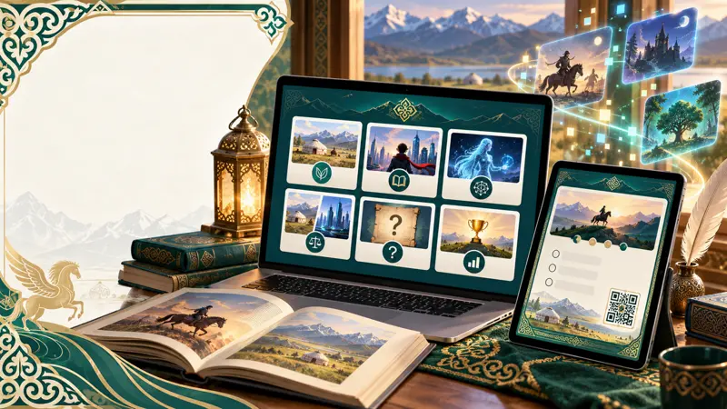

Тема, цель и гипотеза
Почему жанр, появившийся много веков назад, не исчезает?
Сказочные мотивы перешли в мультфильмы, кино, игры, соцсети и тексты ИИ.
Цель
Определить, какие особенности помогают сказке сохранять популярность среди школьников и как сюжет меняется в цифровой среде.
Гипотеза
Сказки интересны не из-за старинной формы, а благодаря понятным темам: добро и зло, ответственность, дружба, помощь, страх, испытание, справедливость.
Объект и предмет
Объект — сказка как литературный жанр в традиционной и современной культуре. Предмет — герой, конфликт, испытание, фантастика и нравственный выбор.
Методы:
Анализ народной сказки
Анкетирование
Сравнение версий
Эксперимент «Человек или ИИ»
Практический продукт
Цифровой путеводитель «Сказка 3.0»

Народная сказка
Современная версия
ИИ-сказка
Сравнительные карточки
Интерактивные задания
Мини-тест
90%назвали понятным
85%удобным для сравнения версий
80%заинтересовал раздел об ИИ
17 из 20назвали общие признаки трёх видов сказки
Можно использовать:
на уроках литературы
на факультативах
в самостоятельной работе
УченикБолатов Нурбол
РуководительИгиликова Айжан
ШколаСредняя школа № 296
СекцияЛитература
Исследовательский проект
Почему сказки остаются популярными в цифровую эпоху
От народных историй до искусственного интеллекта

Попробуйте сами!
Наведите камеру телефона на QR-код,
чтобы открыть путеводитель «Сказка 3.0»